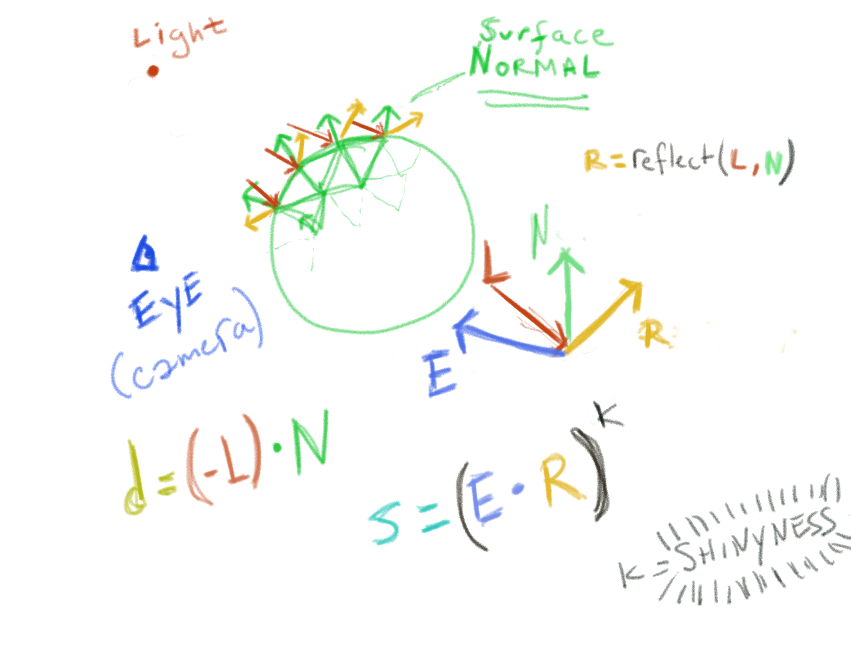
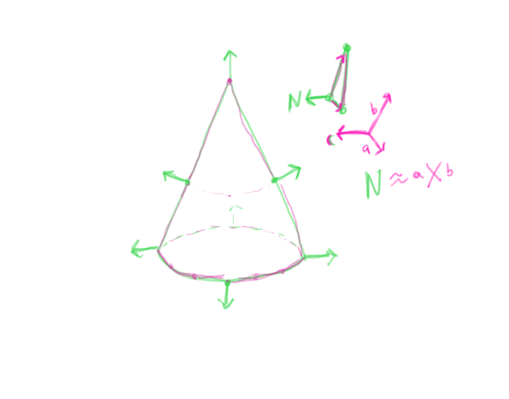

<!doctype html>
<html>
	<head>
		<meta charset="utf-8">
		<meta name="viewport" content="width=device-width, initial-scale=1.0, maximum-scale=1.0, user-scalable=no">

		<title>Lighting</title>

		<link rel="stylesheet" href="../css/reveal.css">
		<link rel="stylesheet" href="../css/theme/black.css">

		<!-- Theme used for syntax highlighting of code -->
		<link rel="stylesheet" href="../lib/css/zenburn.css">

		<!-- Printing and PDF exports -->
		<script>
			var link = document.createElement( 'link' );
			link.rel = 'stylesheet';
			link.type = 'text/css';
			link.href = window.location.search.match( /print-pdf/gi ) ? '../css/print/pdf.css' : '../css/print/paper.css';
			document.getElementsByTagName( 'head' )[0].appendChild( link );
		</script>

	</head>
	<body>
		<script src="../lib/js/head.min.js"></script>
		<script src="../js/ext/reveal.js"></script>
		<script type="text/javascript" src="https://rawgit.com/patriciogonzalezvivo/glslCanvas/master/build/GlslCanvas.js"></script>
		<div class="reveal">
			<div class="slides">

			<section data-markdown>
				<script type="text/template">
				### Gouraud and Phong Lighting
				* [**gouraud** example](webgl_gfx_lighting_gouraud.html) 
				* [**phong** example](webgl_gfx_lighting_phong.html)  
				
				</script>
			</section>

			<section data-markdown>
				<script type="text/template">
				### Gouraud and Phong Lighting
				* Gouraud is calculated **per vertex**
				* Phong is calcuated **per fragment**
				</script>
			</section>
			<section data-markdown>
				<script type="text/template">
				### Gouraud and Phong Lighting: Parameters in EYE Space
				* Light Position $lp$
				* Vertex Position $vp$
				* Vertex Normal $N$

				Get Light Direction $L=vp-lp$  
				Get Eye Direction $E=-vp$

				</script>
			</section>		
				<section data-markdown>
<script type="text/template">
### Vertex Shader: add `normal`, `lightPos`, and `normalMatrix`

	  attribute vec3 position;
	  attribute vec3 normal; 
	  attribute vec3 color; 

	  uniform mat4 modelView;
	  uniform mat4 projection; 

	  uniform vec3 mvLightPos;
	  uniform mat3 normalMatrix;   
</script>
			</section>	


			<section data-markdown>
				<script type="text/template">
				### Surface Normal (Volume Gradient)
				* Unit length vector "sticking out" of mesh
				* $\approx$ Cross product of neighboring vertices  
				
				
				</script>
			</section>			
			<section data-markdown>
				<script type="text/template">
				### Cross Product in Right-Handed Coordinate System
				* CounterClockwise $\mapsto$ Vector Pointing towards you 
				* Clockwise $\mapsto$ Vector Pointing Away from you
				
				</script>
			</section>	
			<section data-markdown>
				<script type="text/template">
				### Lighting is done in Eye Space Coordinates
				`$$ M_{modelView}=M_{view} * M_{model} $$`
				* Makes Lighting Calculations easier
				* Camera is at $(0,0,0)$
				* Helps calculate eye-dependent parameters (e.g. specular highlights)
				</script>
			</section>				
			<section data-markdown>
				<script type="text/template">
				### The Normal Matrix
				* Rotates normal directions into eye space
				* Transposed Inverse of the upper left 3x3 sub-matrix of the Modelview
				`$$ (S_{3,3}[M_{modelView}]^{-1})^{T} $$`
				* see [this for an explanation](http://www.lighthouse3d.com/tutorials/glsl-12-tutorial/the-normal-matrix/)
				* Basically, we need a special transform to avoid shearing the normal due to uneven scaling.
				
				</script>
			</section>	

			<section data-markdown>
				<script type="text/template">
				### The Normal Matrix
						
				$$ (S_{3,3}[view * model]^{-1})^{T} $$

In CPU Code:	

	var v = this.modelView.mat3().inverse().val;			
	shader.setUniformMatrix3("normalMatrix", v );		

In GPU Code:

	...
	attribute vec3 normal; 
	uniform mat3 normalMatrix;   
	...
	int main(){
		...
		vec3 mvNormal = normalMatrix * normal;
		...
	}
				</script>
			</section>


				<section data-markdown>
<script type="text/template">
### Eye Space Calculations:

In CPU code:

	    //Light Position in Eye Space
	    var v = this.modelView.multVec( this.lightPos.hom() );
	    shader.setUniformVec("mvLightPos", v.x, v.y, v.z);

In Shader Code:
	  	
	  	...
	  	uniform vec3 mvLightPos;
	  	...
   		void main() {
    		//EYE SPACE VECTORS
    		vec4 mvPos = modelView * vec4(position, 1.0);
    		vec3 mvDir = normalize(mvPos.xyz);
    		vec3 mvLightDir = normalize(mvPos.xyz - mvLightPos);   
    		vec3 mvNormal = normalMatrix * normal;
    		....

</script>
			</section>	

				<section data-markdown>
<script type="text/template">
### Diffusion Term:

$$ d = N \cdot -L $$

  	float diffuse(vec3 lightDir, vec3 norm){
   		return max( dot( norm, -lightDir) , 0.0);
  	}

  	int main(){
  		...	
  		float d = diffuse(mvLightDir, mvNormal);
  		...
  	}

for $N$ and $L$ of unit length.

</script>
			</section>	

				<section data-markdown>
<script type="text/template">
### Specular Term:

$$ s = (E \cdot R)^{k} $$

  	float specular(vec3 dir, vec3 lightDir, vec3 norm){
   	  return pow(max(dot(reflect(lightDir, norm), -dir), 0.0), 16.);
  	}

  	int main(){
  		...	
  		float s = specular(mvDir, mvLightDir, mvNormal);
  		...
  	}

for $E$ and $R$ of unit length.

</script>
			</section>	
				<section data-markdown>
<script type="text/template">
### Color:
	
	int main(){
		...
		float ambient = .2;
    	vcolor = color * ( ambient + 
    					   diffuse(mvLightDir, mvNormal) +
    					   specular(mvDir, mvLightDir, mvNormal) );
    	...
    }

[Gouraud](webgl_gfx_lighting_gouraud.html)
</script>
			</section>	

			</section>	
				<section data-markdown>
<script type="text/template">
### Phong Shading -- Pass vertex and normal info to frag shader:

VERTEX SHADER:

	...
	attribute vec3 normal;
    uniform mat3 normalMatrix;    //Normal Matrix

    varying vec3 vcolor;
    varying vec3 vnormal;
    varying vec3 vpos;

    int main(){
  	  ...
      vec4 mvPos = modelView * vec4(position, 1.0);
      vpos = mvPos.xyz;
      vnormal = normalMatrix * normal;
  	  ...
    }
</script>
			</section>	
<section data-markdown>
<script type="text/template">
### Phong Shading
FRAGMENT SHADER:

	uniform vec3 mvLightPos;

	varying vec3 vcolor;
	varying vec3 vnormal;
	varying vec3 vpos;
	...
	//diffuse and specular functions
	...
	int main(){
	   vec3 mvNormal = normalize(vnormal);
	   vec3 mvDir = normalize(vpos);
	   vec3 mvLightDir = normalize(vpos - mvLightPos);
	   vec4 finalColor = color * (ambient + diffuse(mvLightDir, mvNormal);
	   finalColor += vec3(1.,1.,1.) * specular(mvDir, mvLightDir, mvNormal));
		...
	}

[Phong](webgl_gfx_lighting_phong.html)
</script>
</section>	

			</div>

		</div>


		<script>
			// More info https://github.com/hakimel/reveal.js#configuration
			Reveal.initialize({
				history: true,

				math: {
				    mathjax: 'https://cdn.mathjax.org/mathjax/latest/MathJax.js',
				    config: 'TeX-AMS_HTML-full'  // See http://docs.mathjax.org/en/latest/config-files.html
				},


				// More info https://github.com/hakimel/reveal.js#dependencies
				dependencies: [
					{ src: '../plugin/math/math.js', async: true },
					{ src: '../plugin/markdown/marked.js' },
					{ src: '../plugin/markdown/markdown.js' },
					{ src: '../plugin/notes/notes.js', async: true },
					{ src: '../plugin/highlight/highlight.js', async: true, callback: function() { hljs.initHighlightingOnLoad(); } }
				]
			});
		</script>
	</body>
</html>	